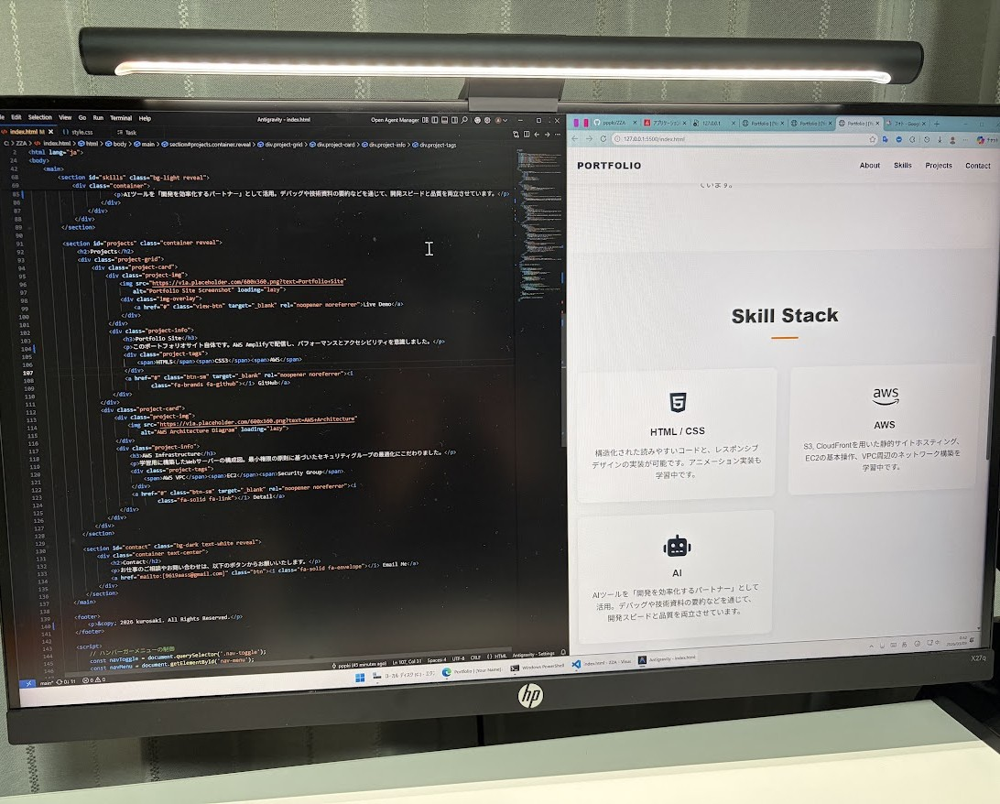

About Me
私はITエンジニアとしての土台を固めるため、まずは基本情報技術者試験に合格し、現在はそこで得た理論を「実務で使えるスキル」へと昇華させる実践的な学習に注力しています。 具体的には、AWSを用いて自力でWebサイトを構築・公開するまでの一連の工程を経験しました。単にサーバーを立てるだけでなく、外部からの不正アクセスを防ぐためのセキュリティ設定や、サイトの表示速度を向上させる仕組みなど、ネットワークの基礎が実社会のインフラとしてどう機能しているかを肌感覚で理解することを重視しています。また、ChatGPTなどのAIツールも、単なる検索手段ではなく「開発を効率化するパートナー」として活用しています。プログラムのデバッグや技術資料の要約、構造案の作成などに役立てることで、新しい技術を柔軟に取り入れながら、仕事のスピードと品質を両立させる方法を常に模索しています。
Skill Stack
HTML / CSS
構造化された読みやすいコードと、レスポンシブデザインの実装が可能です。アニメーション実装も学習中です。
AWS
S3, CloudFrontを用いた静的サイトホスティング、EC2の基本操作、VPC周辺のネットワーク構築を学習中です。
AI
AIツールを「開発を効率化するパートナー」として活用。デバッグや技術資料の要約などを通じて、開発スピードと品質を両立させています。
Projects

Portfolio Site
このポートフォリオサイト自体です。AWS Amplifyで配信し、パフォーマンスとアクセシビリティを意識しました。